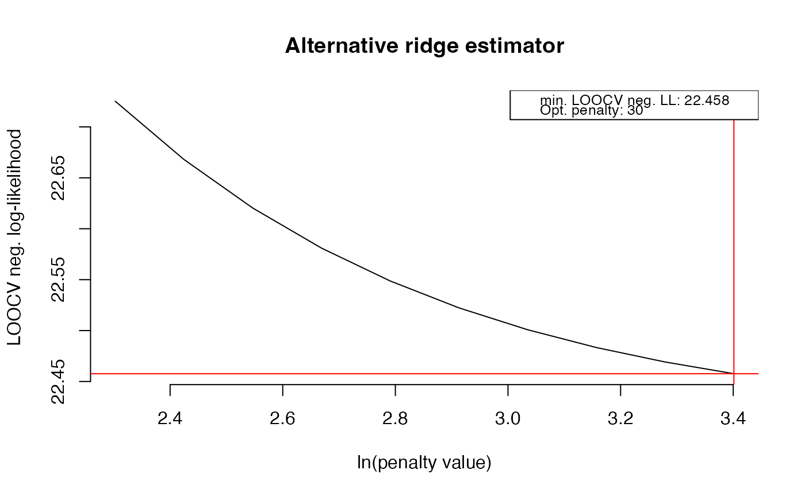

Function that symmetrizes matrices.
symm(M)A symmetric matrix.
Large objects that are symmetric sometimes fail to be recognized as such by R due to rounding under machine precision. This function symmetrizes for computational purposes matrices that are symmetric in numeric ideality.
## Obtain some (high-dimensional) data
p = 25
n = 10
set.seed(333)
X = matrix(rnorm(n*p), nrow = n, ncol = p)
colnames(X)[1:25] = letters[1:25]
## Obtain regularized precision under optimal penalty
OPT <- optPenalty.LOOCV(X, 10, 30, 10, target = diag(diag(1/covML(X))))
#> Perform input checks...
#> Calculating cross-validated negative log-likelihoods...
#> lambda = 10 done
#> lambda = 11.2983096390975 done
#> lambda = 12.7651800700924 done
#> lambda = 14.4224957030741 done
#> lambda = 16.2949822221885 done
#> lambda = 18.4105754709875 done
#> lambda = 20.800838230519 done
#> lambda = 23.5014311081182 done
#> lambda = 26.5526445621438 done
#> lambda = 30 done

## Check symmetry
## OPT$optPrec is symmetric by definition
## But is not recognized as such due to rounding peculiarities
isSymmetric(OPT$optPrec)
#> [1] TRUE
## Symmetrize
symm(OPT$optPrec)
#> A 25 x 25 ridge precision matrix estimate with lambda = 30.000000
#> a b c d e …
#> a 0.7816469442 -0.001758700 -0.024364931 -0.0014622521 0.006876021 …
#> b -0.0017587001 2.050794724 -0.007992553 -0.0031664552 -0.012394718 …
#> c -0.0243649312 -0.007992553 0.813503149 -0.0153506662 0.010239242 …
#> d -0.0014622521 -0.003166455 -0.015350666 1.7634213924 0.010328532 …
#> e 0.0068760206 -0.012394718 0.010239242 0.0103285322 0.907857589 …
#> f 0.0008690872 0.003113969 0.006640575 0.0009544842 -0.002692711 …
#> f …
#> a 0.0008690872 …
#> b 0.0031139694 …
#> c 0.0066405754 …
#> d 0.0009544842 …
#> e -0.0026927109 …
#> f 2.4285341147 …
#> … 19 more rows and 19 more columns